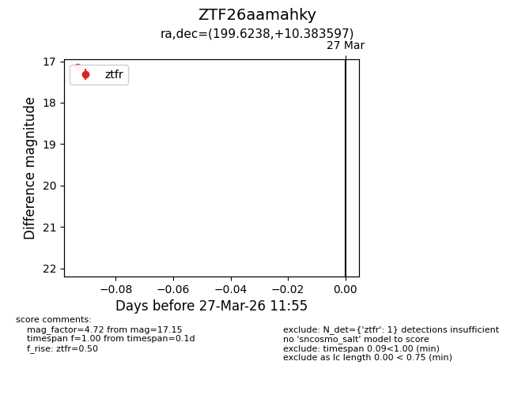
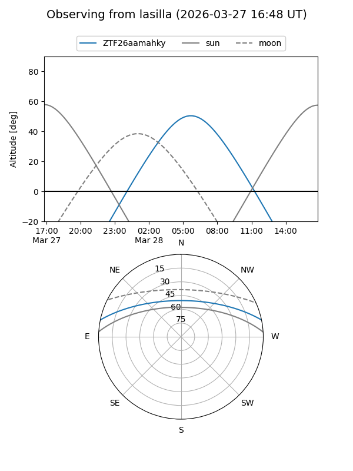
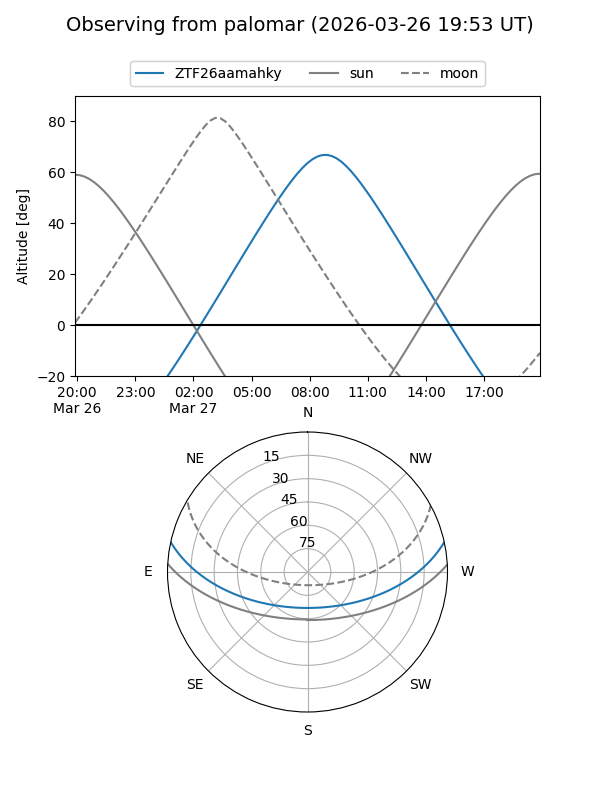

ZTF26aamahky
Target ZTF26aamahky at 2026-03-27 11:58
Aliases and brokers:
FINK: link
Lasair: link
ALeRCE: link
alt names
ZTF26aamahky (ztf,fink_ztf)
Coordinates:
equatorial (ra, dec) = 199.6238,+10.38360
equatorial (HMS+DMS) = 13:18:29.72,+10:23:00.95
galactic (l, b) = (325.0556,+72.08324)
Flags:
Photometry:
last ztfr=17.15
1 ztfr detections
Lightcurve

Visibility


Additional plots